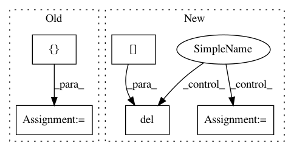

002c64b2ef562528043a1fd9961607415e1170aa,main.py,,get_test_utils,#,183
Before Change
normalize = get_normalize_method(opt.mean, opt.std, opt.no_mean_norm,
opt.no_std_norm)
spatial_transform = [Resize(opt.sample_size)]
if opt.test_crop == "center":
spatial_transform.append(CenterCrop(opt.sample_size))
spatial_transform += [ToTensor(), ScaleValue(opt.value_scale), normalize]
spatial_transform = Compose(spatial_transform)
temporal_transform = LoopPadding(opt.sample_duration)
target_transform = TargetCompose([VideoID(), Segment()])
After Change
if opt.test_crop == "center":
temporal_transform = LoopPadding(opt.sample_duration)
else:
del spatial_transform[1] //remove CenterCrop
temporal_transform = SlidingWindow(opt.sample_duration, opt.test_stride)
target_transform = TargetCompose([VideoID(), Segment()])
test_data, collate_fn = get_test_set(
In pattern: SUPERPATTERN
Frequency: 3
Non-data size: 5
Instances
Project Name: kenshohara/3D-ResNets-PyTorch
Commit Name: 002c64b2ef562528043a1fd9961607415e1170aa
Time: 2018-11-21
Author: kensho.hara@aist.go.jp
File Name: main.py
Class Name:
Method Name: get_test_utils
Project Name: SheffieldML/GPy
Commit Name: 0abb9b835ffeb020410bdf9a1e0532139ffa5cfc
Time: 2016-08-16
Author: ibinbei@gmail.com
File Name: GPy/kern/src/add.py
Class Name: Add
Method Name: __init__
Project Name: soft-matter/trackpy
Commit Name: 8d74e077e63dac70a6932eb0496a4bb821253f5b
Time: 2012-12-05
Author: daniel.b.allan@gmail.com
File Name: mr/wire_models.py
Class Name: Model
Method Name: fit